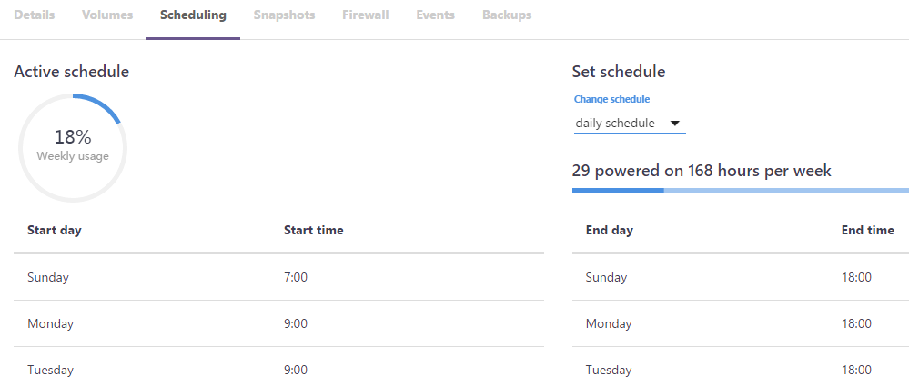
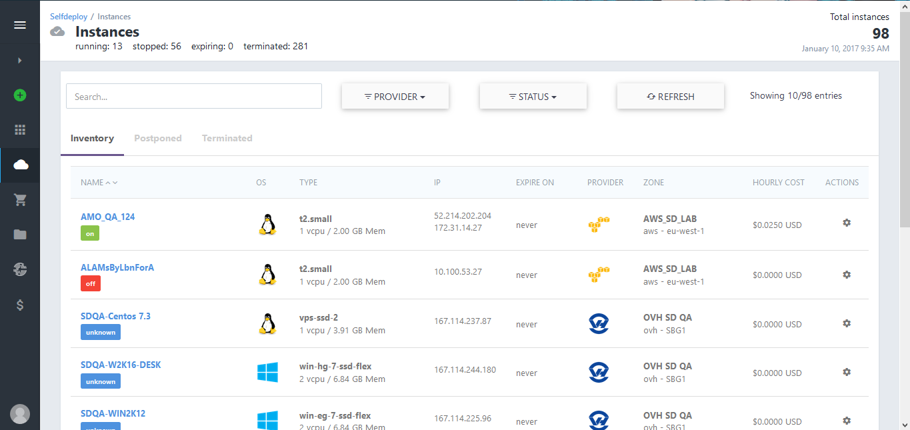
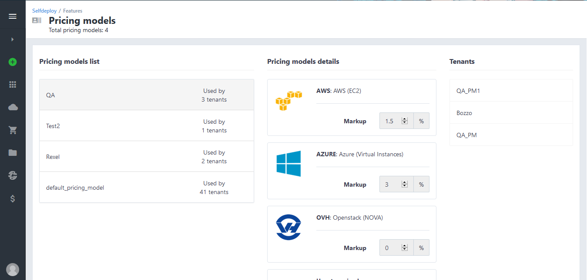

Orchestration multi cloud complète
SelfDeploy intègre un large écosystème de fournisseurs cloud. Choisissez celui qui correspond à vos besoins. Vous pouvez gérer toute votre infrastructure via SelfDeploy et contrôler le cycle de vie des applications en fonction de vos priorités business.
Scheduling pré-défini
Des plans de scheduling prédéfinis et personnalisables sont disponibles. Ils permettent aux utilisateurs de programmer la date et l’heure spécifique auxquelles les instances vont s’allumer, s’éteindre ou être supprimées.
Gestion des backups
Des politiques de sauvegarde seront appliquées via des snapshots sur les volumes de votre choix ou sur le serveur entier.
Partout dans le monde
SelfDeploy est parfaitement adapté pour la gestion des opérations partout dans le monde. Il offre un portail multi-fuseaux horaires, multi-devises et multi-langues et un dashboard intuitif pour gérer les workloads cloud via une interface unique. C’est plus d’efficience, de contrôle et de scalabilité.